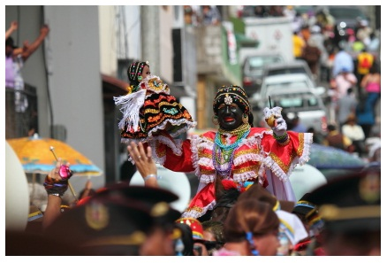
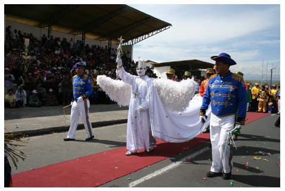
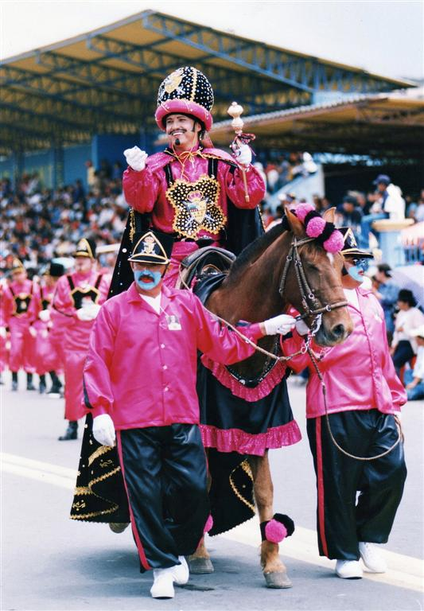
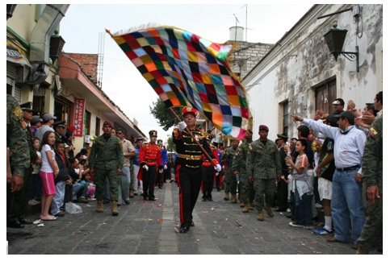

Latacunga Tourist Guide
TRADITIONS, CULTURE AND FOOD
The Mama Negra Festival.
The Mama Negra, also known as the Holy Tragedy Festival, is one of the local traditions in Latacunga
A festival held on two days
-
The first festival is held in September and organized by the businesses and residents of the Merced and Salto markets in honor of the Virgin of the Merced.
-
The second event is held the first week of November during which the city's residents celebrate their independence.

PHOTO: DIEGO PAREDES B.
Characters of the Mama Negra
The Mama Negra: A man dressed as a woman is the main person of the festival. He wears a very colorful and eye - catching dress and at every corner during his procession he changes handkerchiefs. In his right hand he carries his youngest daughter, Manuelita Baltazara, and in his left he carries a bottle with which he feeds his daughter and throws milk at unsuspecting tourists.

PHOTO: IVAN CAICEDO ATIAGA
The Angel of the Star: Dressed in white, with wings and a crown, he carries in his right hand a scepter with a star. At the same time he recites praises to the Virgin of the Merced so that she protects the parade. He is not an original character but is taken from Biblical passages.

PHOTO: IVAN CAICEDO ATIAGA
The Moro King: He is identified with European Kings in colonial times. He wears a costume which is dress from the time of the moros. This personage has become part of the procession as a representative of the Spanish conguest.

The Abanderado: Just like the captian, he wears a military uniform and a multicolored banner also called the morisca banner. He is joined by a platoon of soldiers and complements his presentation by waving his banner.

PHOTO: IVAN CAICEDO ATIAGA
The Captain: This character is dressed in a military uniform and carries a saber in his right hand. He is accompanied by a platoon of soldiers who guard and protect him during the whole procession. He is the greatest figure of the festival and lover of the Mama Negra.

PHOTO: IVAN CAICEDO ATIAGA
<<Previous